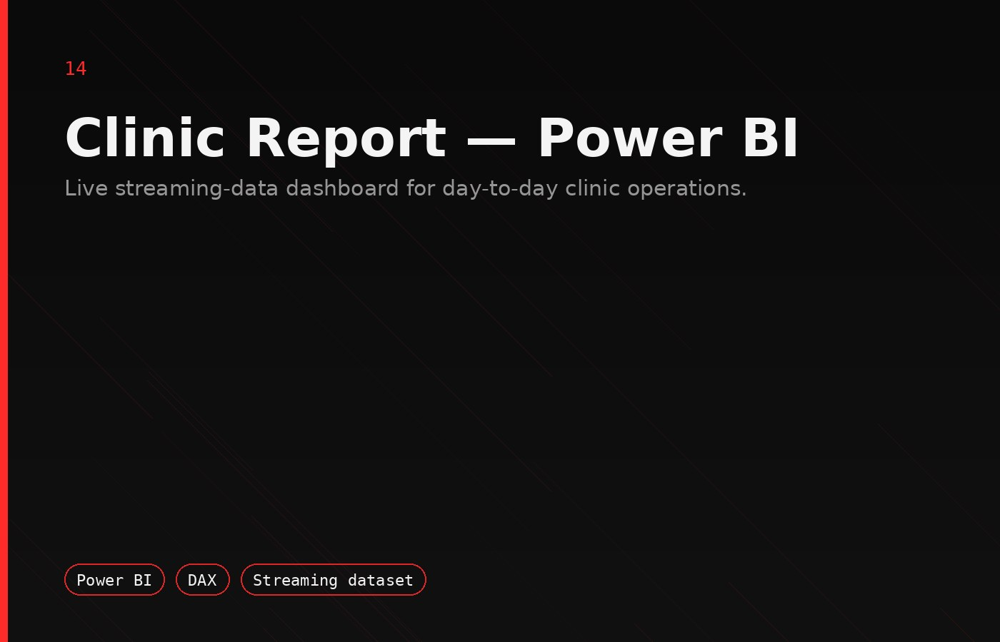
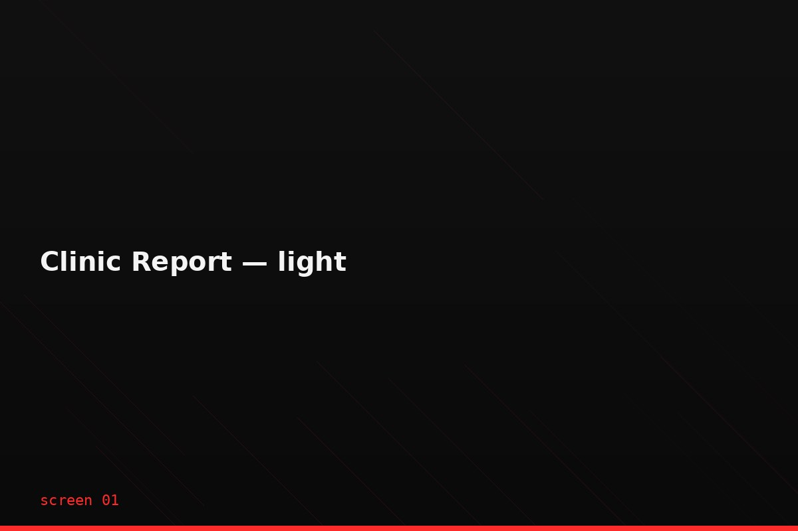
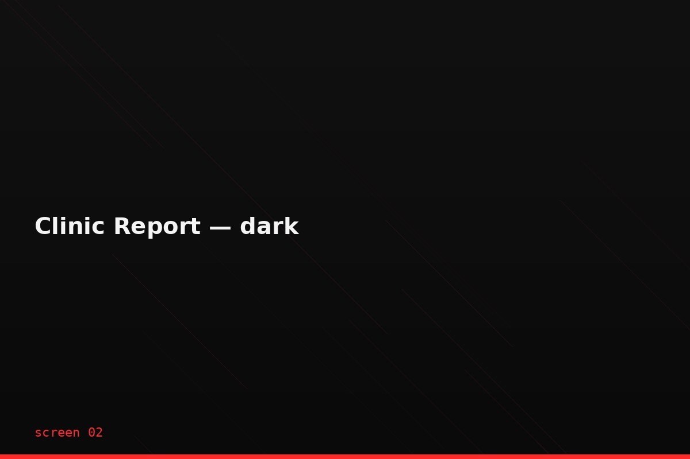

A Power BI dashboard for day-to-day clinic operations, connected to a live streaming dataset with matching light and dark report pages.

This is a Power BI report rather than a web app — built to give clinic staff a live operational view, connected to a cloud streaming dataset so the numbers move as new data arrives instead of refreshing on a fixed schedule.
The report ships two visually matched pages — a light and a dark "Clinic Report" theme — plus a guided "play" walkthrough page for presenting the dashboard to stakeholders.
Built from a cloud streaming source so visuals update off live data, not a fixed refresh schedule.
The report ships a preformatted light page and a matching dark page.
A dedicated "play" page steps through the report for presentations.
Visuals are built around the day-to-day numbers clinic staff track.
A closer look at the report. Screenshots below are placeholders — swap the files in assets/projects/14-clinic-report/ with real captures once the report is finalized.


I modeled the report pages and theme pair in Power BI, wiring visuals to a cloud streaming dataset so the dashboard reflects live clinic activity rather than a static extract.